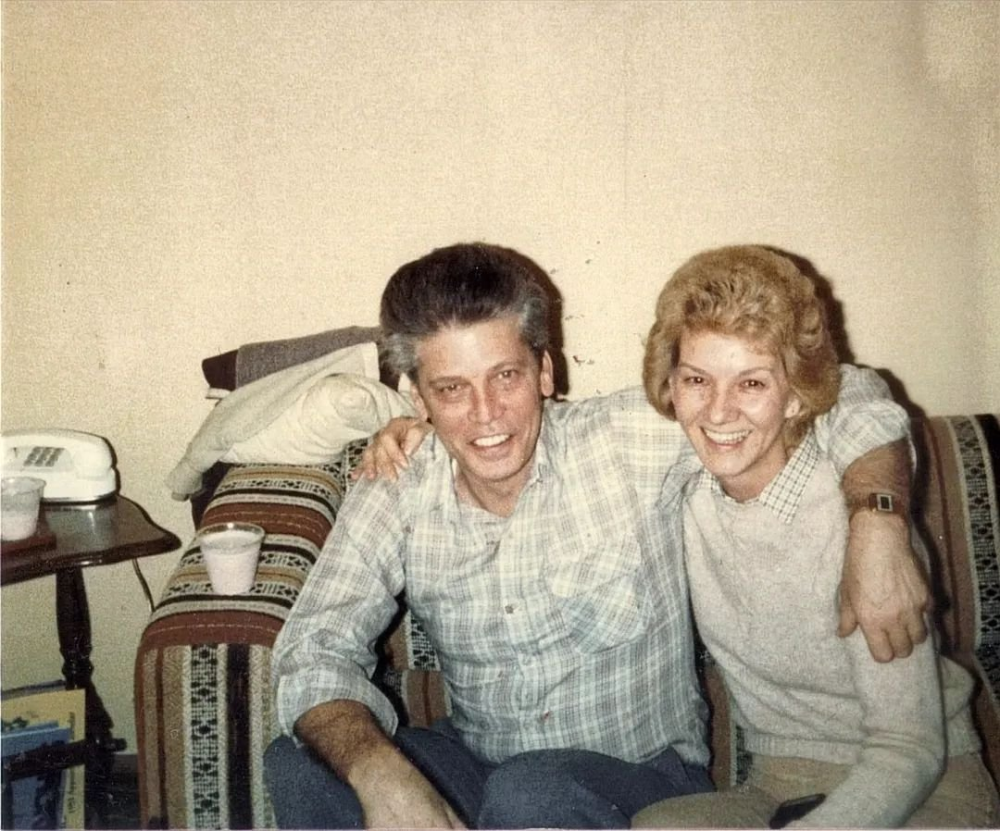

Also known as: Arline (Stone) Brewster Gayhart; Arline Stone (maiden name); Arlene Brewster (as spelled in a 1953 newspaper); Arline Brewster; Arline Gayhart (later married name)
Profile status: SUPPORTED her marriages and children rest on a 1953 newspaper and two family obituaries; her birth date and parents come only from an unsourced Geni profile
Arline Gayhart. Family photo, shared 7 November 2026.
Quick Facts
Born
22 February 1938, birthplace not known UNPROVED Her Geni profile gives the date with no source and no place. The Ohio Birth Index has not yet been checked.
Parents
William Stone UNPROVED Ruth Stone UNPROVED Named on her Geni profile, which cites no source. No birth or marriage record naming her parents has been found yet.
Spouses
Earl Brewster (1935–1959), her first husband, married by July 1953, when a newspaper called her "Mrs. Arlene Brewster" DOCUMENTED Their daughter Cheryl's 2015 obituary calls her parents "Arline Stone Gayhart and the late Earl Brewster" DOCUMENTED. Earl was killed on 22 March 1959, leaving her a widow DOCUMENTED. No marriage record has been found, so the date and place of the wedding are unknown. Wilkie Gayhart (deceased), her second husband, married by 1961 SUPPORTED Their daughter Kristy's 2025 obituary says she was born in December 1961 "to Wilkie and Arline Gayhart" and that her father, Wilkie Gayhart, had died before her DOCUMENTED. No marriage record or obituary for Wilkie has been found yet.
Cheryl Ann (Brewster) Horne (2 Oct 1956 – 23 May 2015) DOCUMENTED
Father not yet proved:
Maureen Fields SUPPORTED as Earl's
Carolyn Coomes UNPROVED as Earl's
Adele Bowen UNPROVED as Earl's
By Wilkie Gayhart:
Kristy Ann (Gayhart) Duckett (25 Dec 1961 – 18 Dec 2025) DOCUMENTED
Arline is the mother of all six SUPPORTED: Cheryl's 2015 obituary and Kristy's 2025 obituary each name the others as brother and sisters. Those lists prove the mother but not always the father, because Kristy was born after Earl's death. Maureen's birth falls in Earl's lifetime or just after; Rick ruled on 7 November 2026 that Maureen and Adele are definitely Earl's daughters. For Carolyn no record yet names a father. The grades for Earl's children match his page.
Residence
519 E. 12th Street, Cincinnati, with Earl's parents, 1953 DOCUMENTED; Cincinnati, Ohio, 2015 DOCUMENTED
Status
Living as of December 2025, when her daughter Kristy's obituary named her as Kristy's surviving mother DOCUMENTED
Immediate Family
Parents
William Stone UNPROVED Ruth Stone UNPROVED Named on her Geni profile, which cites no source. No birth or marriage record naming her parents has been found yet.
Spouses
Earl Brewster (1935–1959), her first husband, married by July 1953, when a newspaper called her "Mrs. Arlene Brewster" DOCUMENTED Their daughter Cheryl's 2015 obituary calls her parents "Arline Stone Gayhart and the late Earl Brewster" DOCUMENTED. Earl was killed on 22 March 1959, leaving her a widow DOCUMENTED. No marriage record has been found, so the date and place of the wedding are unknown. Wilkie Gayhart (deceased), her second husband, married by 1961 SUPPORTED Their daughter Kristy's 2025 obituary says she was born in December 1961 "to Wilkie and Arline Gayhart" and that her father, Wilkie Gayhart, had died before her DOCUMENTED. No marriage record or obituary for Wilkie has been found yet.
Arline is the mother of all six SUPPORTED: Cheryl's 2015 obituary and Kristy's 2025 obituary each name the others as brother and sisters. Those lists prove the mother but not always the father, because Kristy was born after Earl's death. Maureen's birth falls in Earl's lifetime or just after, which supports him as her father; for Carolyn and Adele no record yet names a father. The grades for Earl's children match his page.
22 Feb 1938 · age 0 Born, place not known, daughter of William and Ruth Stone UNPROVED
By Jul 1953 · age 15 Married to Earl Brewster; while he served with the Marines in Korea she lived with his parents at 519 E. 12th Street, Cincinnati DOCUMENTED
27 Jul 1953 · age 15 Earl wounded on the last day of the Korean War; the newspaper report names her as "Mrs. Arlene Brewster" DOCUMENTED
2 Oct 1956 · age 18 Daughter Cheryl Ann born in Cincinnati DOCUMENTED
22 Mar 1959 · age 21 Widowed when Earl was killed in a car crash in Kentucky DOCUMENTED
By 1961 Married Wilkie Gayhart SUPPORTED
25 Dec 1961 · age 23 Daughter Kristy Ann Gayhart born in Cincinnati DOCUMENTED
23 May 2015 · age 77 Her daughter Cheryl Horne died; Arline was then living in Cincinnati DOCUMENTED
18 Dec 2025 · age 87 Her daughter Kristy Duckett died; Arline survived her DOCUMENTED
Life Story
Arline Stone was born on February 22, 1938, according to a family tree, the daughter of William and Ruth Stone. UNPROVED She married Earl Brewster while still a teenager, and by July 1953, when Earl was a Marine machine-gunner in Korea, she was living with his parents on East 12th Street in Cincinnati; the newspaper report of his wounding on the war's last day named her as "Mrs. Arlene Brewster." DOCUMENTED Back home, Earl worked as a printer, and their daughter Cheryl Ann was born in Cincinnati in 1956. DOCUMENTED Their son Earl Jr. is remembered in the family as Earl's boy. FAMILY ACCOUNT
In March 1959 Earl was killed when his car left the road in Kentucky, leaving Arline a widow at twenty-one with small children. DOCUMENTED By 1961 she had married Wilkie Gayhart, and their daughter Kristy was born on Christmas Day that year. SUPPORTED Arline was the mother of six children, and she stayed in Cincinnati; she outlived both Wilkie and her daughters Cheryl (2015) and Kristy (2025). DOCUMENTED
Photo Gallery
Arline Gayhart. Family photo, shared 7 November 2026.

Arline Gayhart with her second husband, Wilkie Gayhart. Family photo, shared 7 November 2026.
Sources and Evidence
Newspaper article, "Pvt. Earl Brewster wounded on final day," about 28–31 July 1953 (paper not named; clipping in the family collection): "PFC Brewster, husband of Mrs. Arlene Brewster, also of the Twelfth Street address" DOCUMENTED
Obituary of Cheryl Ann Brewster Horne, Warlick Funeral Home, Lincolnton, North Carolina, posted 24 May 2015: born October 2, 1956, in Cincinnati "to Arline Stone Gayhart and the late Earl Brewster"; survived by "her mother, Arline Gayhart of Cincinnati," a brother Earl Brewster, and sisters Carolyn Coomes, Adele Bowen, Maureen Fields and Kristy Duckett (the heading misprints her birth year as 1946) DOCUMENTED
Obituary of Kristy Ann Duckett, Hodapp Funeral Homes, 2025: "born Kristy Ann Gayhart to Wilkie and Arline Gayhart on December 25, 1961, in Cincinnati"; died 18 December 2025; "survived by her mother, Arline Gayhart"; "preceded in death by her father, Wilkie Gayhart, and her sister, Cheryl Horne"; names her siblings Earl Brewster, Carolyn Coomes, Adele Bowen and Maureen Fields DOCUMENTED
Earl Brewster's Kentucky death record and his VA grave marker, Spring Grove Cemetery: his death on 22 March 1959 (see his page) DOCUMENTED
Geni, Arline Gayhart (Stone), read 6 November 2026: born February 22, 1938 (no place); parents William Stone and Ruth Stone; widow of Earl Brewster; six children; no sources, documents or photos attached (tree lead only) UNPROVED
Grades: DOCUMENTED an original record says it · SUPPORTED several records point to it · FAMILY ACCOUNT the family's own telling · UNPROVED a lead, not proved.
Research Notes and Open Questions
Marriage records: Earl Brewster × Arline Stone, about 1952–53 (Hamilton County, Ohio, or Kenton or Campbell County, Kentucky); Wilkie Gayhart × Arline Brewster, about 1959–61. Either would confirm her parents and birth date.
Birth: check the Ohio Birth Index for an Arline (or Arlene) Stone born 22 February 1938 to confirm the Geni date and her parents William and Ruth Stone.
Wilkie Gayhart: his dates are not known and no obituary has been found yet.
Paternity of Maureen, Carolyn and Adele: Ohio birth records for each child would settle which were Earl's and which Wilkie's.
Spelling: "Arlene" in the 1953 newspaper; "Arline" in both obituaries and on Geni. The later spelling is used here.
Photo: portrait placed 7 November 2026, from a family photo shared by Rick.
Arline's profile is filed in Earl Brewster's folder, like other spouses in their partner's folder.
DNA
No DNA matches linked yet.
Profile history: Updated 7 November 2026: her children linked to their profile Docs; Maureen and Adele ruled Earl’s daughters. Updated 7 November 2026 with her portrait photo. Updated 6 November 2026 with her maiden name, birth date and parents (tree claims), both marriages, her six children, a timeline, life story and sources.